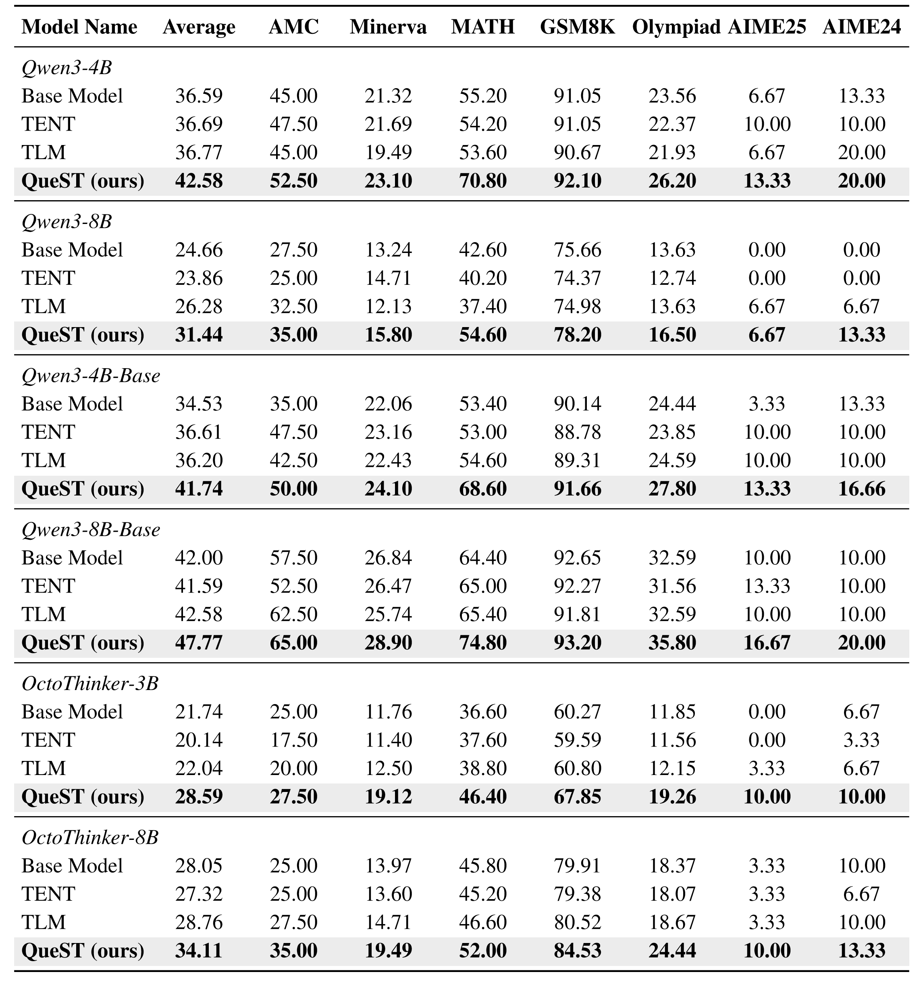
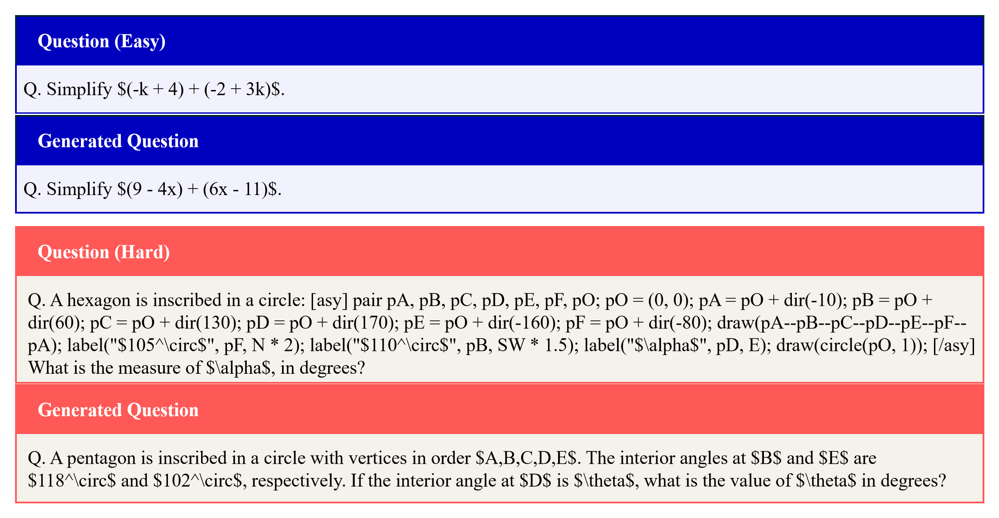
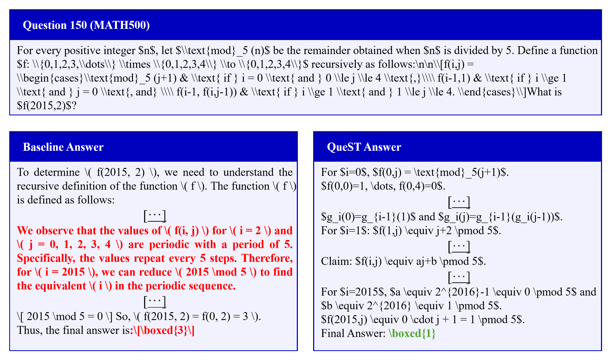

Large language models (LLMs) are typically deployed with fixed parameters, and their performance is often improved by allocating more computation at inference time. While such test-time scaling can be effective, it cannot correct model misconceptions or adapt the model to the specific structure of an individual query. Test-time optimization addresses this limitation by enabling parameter updates during inference, but existing approaches either rely on external data or optimize generic self-supervised objectives that lack query-specific alignment. In this work, we propose Query-Conditioned Test-Time Self-Training (QueST), a framework that adapts model parameters during inference using supervision derived directly from the input query. Our key insight is that the input query itself encodes latent signals sufficient for constructing structurally related problem–solution pairs. Based on this, QueST generates such query-conditioned pairs and uses them as supervision for parameter-efficient fine-tuning at test time. The adapted model is then used to produce the final answer, enabling query-specific adaptation without any external data. Across seven mathematical reasoning benchmarks and the GPQA-Diamond scientific reasoning benchmark, QueST consistently outperforms strong test-time optimization baselines. These results demonstrate that query-conditioned self-training is an effective and practical paradigm for test-time adaptation in LLMs.
Quantitative comparison of QueST with existing test-time optimization methods (TENT, TLM) across seven mathematical reasoning benchmarks. All methods are evaluated under the same experimental setup.
QueST consistently outperforms both the base model and prior baselines on every LLM.

QueST generates problems ranging from surface-level variations (top) to structural transformations (bottom), depending on the input query. These diverse problems serve as supervision signals for test-time adaptation.

While the baseline fails to produce the correct answer, QueST adapts at test time using query-conditioned supervision and recovers the correct solution.

@article{song2026query,
title={Query-Conditioned Test-Time Self-Training for Large Language Models},
author={Song, Chaehee and Seo, Minseok and Seong, Yeeun and Kim, Doyi and Kim, Changick},
journal={arXiv preprint arXiv:2605.13369},
year={2026}
}